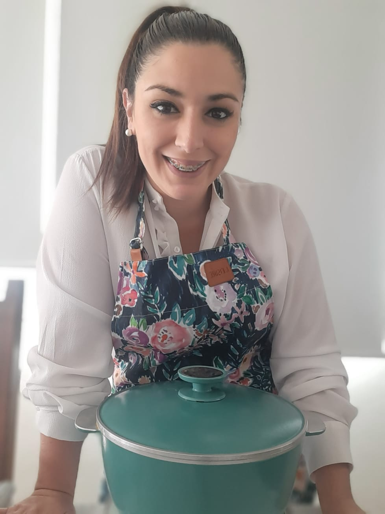

Mi nombre es Bárbara, aunque todos me llaman Barby.
Vivo con mi hijo Francisco y mi marido Agustín. Soy de la ciudad de Mar del Plata.
Soy emprendedora en Essen desde Abril de 2020. La pandemia me ayudó a crecer y me dió la posibilidad de animarme a emprender y creer en mi misma.
AMO cocinar, lo que más disfruto es que me digan cuando la comida está rica, me llena el corazón ♥.
Este tiempo en Essen me despertó la confianza que necesitaba para saber que puedo lograr todo lo que me proponga.
Hoy hace 2 años que descubrí que emprender es mi modo de vida.
- -El que me hace feliz
- -El que me divierte
- -El que me impulsa a mejorar
- -El modo que me empuja a querer lograr todo lo que me proponga
- -El que me da alas para alcanzar mis sueños
Tengo la certeza que con amor, constancia y trabajo puedo tener TODO LO QUE QUIERO Y MEREZCO!
Deseo de corazón que ustedes puedan descubrir eso que los llene de adrenalina, empuje y de valor como este emprendimiento lo hace conmigo.
Gracias por acompañarme siempre en esta aventura!